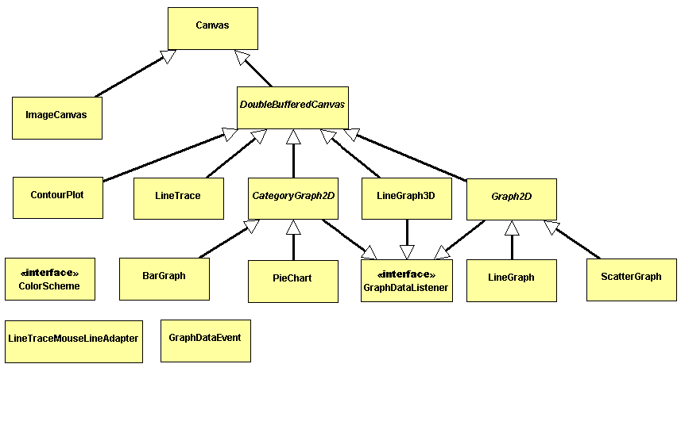
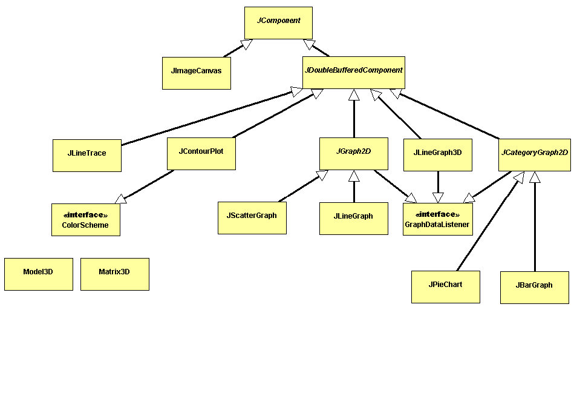
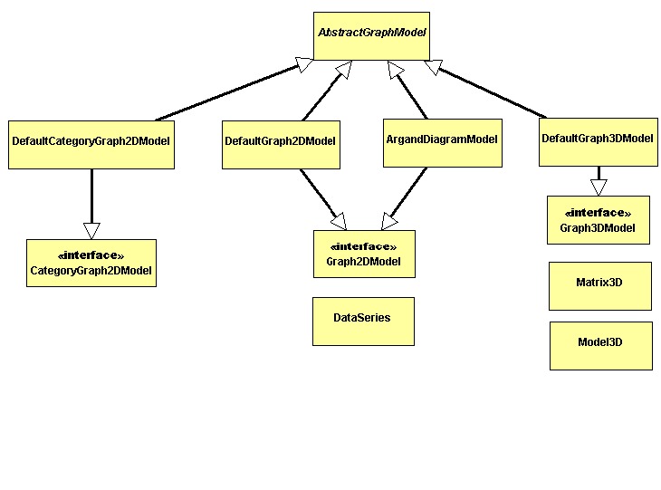

If possible, the JSci.swing components should be used in preference to the JSci.awt components.
The LineGraph and LineTrace components provide a bridge between data arrays and line graphs. The LineGraph class displays a data array as a graph, whereas the LineTrace class does the reverse operation. It allows the user to sketch a graph which is captured into a data array.
The other graph components provide alternative graph types for displaying data arrays. The 3D graph can be rotated using the mouse.
The graph components adhere to the Swing MVC (Model-View-Controller) architecture.
The graphs are used in a similar way to the Swing JTable class. There is a distinction between the graph GUI and the graph data. The graph component classes handle the visual display of data, while the graph model interfaces provide the means of making data available to the graph components in a format independent way.
To create a graph model, you can either use one of the default model classes provided, or write your own class by extending AbstractGraphModel and implementing one of the graph model interfaces. The default models should be sufficient for most purposes. For advanced needs (e.g. reading data over a network from several sources), it is strongly recommended that you write your own model class.
Once a data model has been created, it can simply be plugged in to any compatible graph component. This means you can easily switch between different (but compatible) graph components without having to make any changes to the graph model. Any real-time updates or other changes to the data are done through the graph model (the graph component will update automatically).
For an example, see the GraphDemo source code.
Use the GraphLayout manager to arrange the graph component with a title and axis label components. Any component can be used as a title or axis label, an obvious choice is java.awt.Label.
For an example, see the GraphDemo source code.
You need to write your own Graph2DModel which fires GraphDataEvents
with isIncrementalChange=true every time a new data point
becomes available.
Use setXExtrema(float min, float max, float growth)
and setYExtrema(float min, float max, float growth)
to specify the amount the graph should extend the axis by,
when it needs to enlarge the graph.



Images courtesy of John Carr.
Return to the Developer's Guide contents.